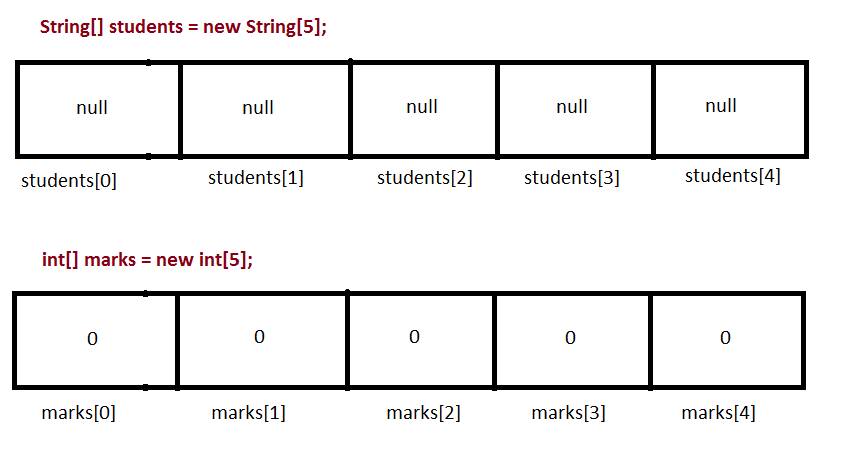

An array is a variable that can hold more than one value. Why might this be useful? Try the following exercise: this will help you see where arrays could come in useful.
Imagine you wanted to write a program to display the number of days in each month (in a non-leap year). For example:
January has 31 days February has 28 days March has 31 days April has 30 days May has 31 days June has 30 days July has 31 days August has 31 days September has 30 days October has 31 days November has 30 days December has 31 daysand so on. Try writing such a program. What do you have to do? Can you think of any way in which a loop could make it more efficient.... or does this not work?
Situations like this, in which we want to deal with multiple values of the same general type of data (e.g multiple month names) is where arrays come in useful. Rather than having to write 12 System.out.println statements to print out the details of each month, we could create an array holding all the month names, and another array holding all the month lengths, and loop through them. The example below shows how this could be done, using a different scenario.
public class ArrayApp1
{
public static void main (String[] args)
{
String[] students = { "John Fox", "Mark Smith", "Helen Mills", "Tom Curtis", "Kate Brown" };
int[] marks = { 30, 65, 60, 70, 80 };
System.out.println("The first student has a name of: " + students[0]);
System.out.println("The third student has a name of: " + students[2]);
for (int counter=0; counter< 5; counter++)
{
System.out.println (students[counter] + " has got " + marks[counter] + "%.");
}
}
}
How is this working?
String[] students = { "John Fox", "Mark Smith", "Helen Mills", "Tom Curtis", "Kate Brown" };
The variable is called students and the data type is String[], which means
"string array". In other words, students is a variable which can hold
multiple string values. Likewise marks can hold multiple integer values.
System.out.println("The first student has a name of " : + students[0]);
System.out.println("The third student has a name of " : + students[2]);
We use the square brackets [] with an index number to reference individual members of an array.
The index begins with zero, not one.. So students[0] refers to the
first member of the array, and students[2] refers to the third member of the
array. Therefore, the output of these two statements will be
The first student has a name of John Fox The third student has a name of Helen MillsThe diagram below shows the two arrays and the use of indexing.
System.out.println (students[counter] + " has got " + marks[counter] + "%.");This statement will print out the details of whatever student corresponds to the current value of the variable counter:
System.out.println (students[0] + " has got " + marks[0] + "%.");with the result:
John Fox has got 30%.
System.out.println (students[1] + " has got " + marks[1] + "%.");with the result:
Mark Smith has got 65%.
The code above works when we know in advance what is going to be in each array. However, in many cases, we might not know that. We might want to read in the contents of the array from the keyboard or from a file. In these cases, we need to create empty arrays and then fill them in with input from the user or from a file. Here is an example in which the user inputs the student names and marks from the keyboard:
import java.util.Scanner;
public class ArrayApp2
{
public static void main (String[] args)
{
String[] students = new String[5];
int[] marks = new int[5];
String markAsString;
Scanner scanner = new Scanner(System.in);
// Loop for reading in student details
for (int counter=0; counter< 5; counter++)
{
System.out.println("Enter name for student " + counter);
students[counter] = scanner.nextLine();
System.out.println("Enter mark for student " + counter);
markAsString = scanner.nextLine();
marks[counter] = Integer.parseInt (markAsString);
}
// Loop for displaying student details
for (int counter=0; counter< 5; counter++)
{
System.out.println (students[counter] + " has got " + marks[counter] + "%.");
}
}
}
Note how we don't immediately fill in the array with pre-determined values, but instead create two
empty arrays:
String[] students = new String[5]; int[] marks = new int[5];The number in the brackets is the array capacity: the number of values each array can hold. So in this case, both students and marks can hold 5 values.
What values will the empty arrays actually contain? It will be the default value for that data type.
For numeric data types, such as int, this will be zero. If it is an array of objects
(and Strings are actually built-in objects)
it will be the special value null, which basically indicates an
object which has not been initialised yet. This is shown below:

Note how then we use a loop to read in the individual values from the keyboard and set the appropriate member of the array to the value read in. The line:
students[counter] = scanner.nextLine();will set the member of the students array at index counter to the text read in from the keyboard (i.e. scanner.nextLine()). So, as before, if counter is 0, it will read in the name of the first student, and so on.
In object-oriented programming, we often need to store arrays of objects. For example, in the student records system, rather than storing two separate arrays for student names and student marks, it would be better to create a Student class to represent a student. The Student class could contain attributes for name and mark (as well as other information such as course and phone number). In our program, we could then store an array of Student objects rather than separate arrays for names and marks (and courses and phone numbers). You will explore this with the exercise below.
Here is an example of creating an array of objects:
Cat[] cats = new Cat[5];This will create an array to hold 5 Cat objects, and initialise each member to null.
We can then fill in the array of Cats with actual Cat objects:
cats[0] = new Cat("Felix", 5);
cats[1] = new Cat("Tigger", 3);
and loop through the array:
for(int counter=0; counter<5; counter++)
{
System.out.println(cats[counter].getName());
}
Using Scanner, develop your student records system into a program in which the user can select two options: one to add a student and one to print all students in the array. If the user selects the first option, they should be able to enter the details of a new student. If the user selects the second option, they should be able to print all existing students. See if you can figure out how to keep track of how many students have been added so far, and ensure that you do not add more students than there are room for in the array!